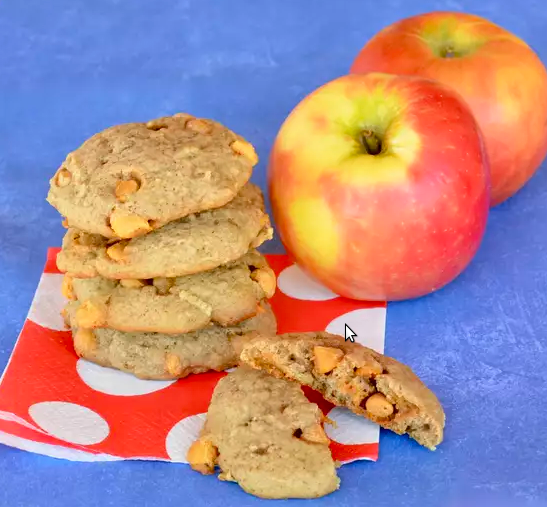

Butterscotch Apple Cookies

Description
The recipe for these cookies can be altered depending on your audience.
Specifically, the amount of sugar, whether or not you use icing and how much walnuts to include can be varied a bit without too much concern.
Ingredients
- 2.5 cups all-purpose flour
- 2 teaspoons ground cinnamon
- 1 teaspoon baking soda
- 0.5 teaspoon salt
- 1 cup packed brown sugar
- 10 tablespoons butter, softened
- 1 egg
- 2/3 cup apple juice
- 2 cups butterscotch chips
- 3/4 cup grated apple
- 1 cup chopped walnuts
- 2 tablespoons butter
- 1 cup powdered sugar
Steps
- Preheat oven to 350 degrees F (175 degrees C). Lightly grease cookie sheets.
- Mix together flour, cinnamon, baking soda and salt in medium bowl.
- Beat brown sugar and 1/2 cup butter in large mixer bowl until creamy. Beat in egg. Gradually beat in flour mixture alternately with apple juice. Stir in 1 1/2 cups butterscotch chips, apple and 1/2 cup walnuts. Drop by slightly rounded tablespoon onto lightly greased cookie sheets.
- Bake for 10 to 12 minutes, until lightly browned. Let stand 2 minutes; cool on wire racks.
- While the cookies cool make the butterscotch glaze: Melt remaining butterscotch chips and 2 tablespoons butter in small, heavy saucepan over lowest possible heat.
- When the butter and chips have melted remove the pan from heat and stir in 1 cup confectioners' sugar and 1 1/2 tablespoon apple juice until the glaze is smooth. Spread the glaze on the cooled cookies and sprinkle with remaining walnuts.
Back to Odin Recipes